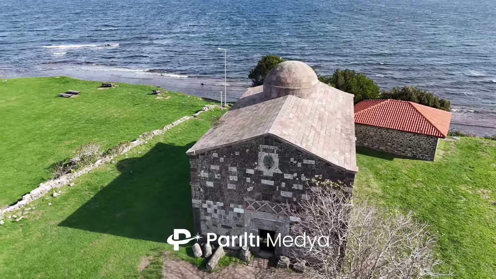
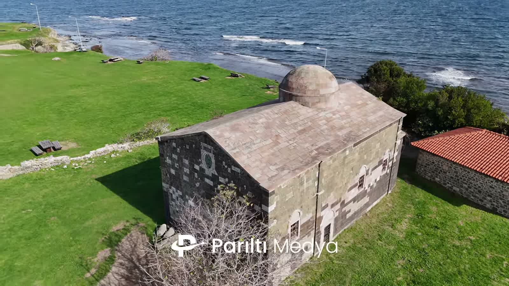
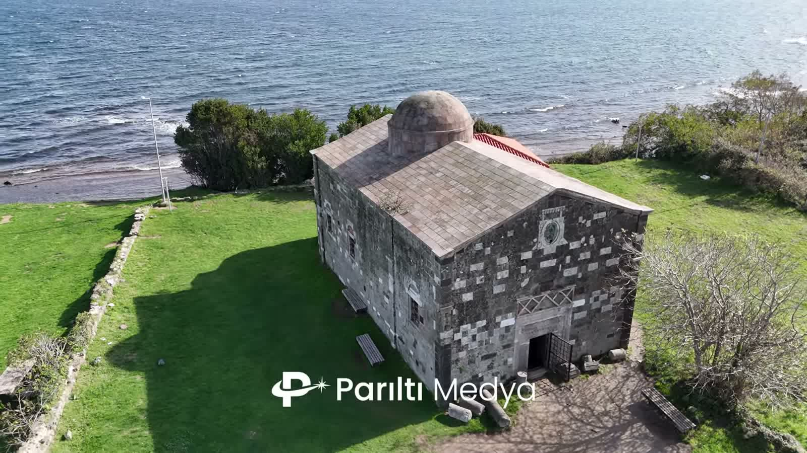

Yason Kilisesi, Ordu
Ordu'nun Karadeniz kıyısında dar bir burun açık denize doğru uzanır; ucunda tek kubbeli, küçük bir taş kilise durur. Burası Yason Burnu: bir Yunan efsanesinin, antik bir kutsal alanın ve 19. yüzyıldan kalma bir ibadethanenin aynı çimenliği paylaştığı yer.
Filmimiz yirmi saniye sürüyor: yapının çevresinde, arkasında denizle tek bir ağır tur. Buranın hikâyesi ise çok daha uzun; o yüzden yazıya döktük.
/ Bu yazıda:
Kısaca
- Konum: Çaytepe köyü, Perşembe ilçesi, Ordu
- Uzaklık: Ordu'ya yaklaşık 28 km, Perşembe'ye 15 km
- Yapım yılı: 1868 (bazı kaynaklarda 1869)
- Restorasyon: 2004
- Statü: 1. derece arkeolojik ve 2. derece doğal sit alanı
Burun nerede?
Yason Burnu, Ordu'nun Perşembe ilçesine bağlı Çaytepe köyünde; Ordu şehir merkezine yaklaşık 28, Perşembe ilçe merkezine 15 kilometre uzaklıkta. Fatsa ve Bolaman'ın kurulduğu geniş körfezin doğu ucunu kapatır. Araştırmacılar, parçası olduğu çıkıntıyı Sinop'un doğusundaki Türkiye kıyılarının en büyük burnu olarak tanımlar.
Eski sahil yolu burada koyların ve fındıklıklarla kaplı tepelerin arasından kıvrılarak ilerler; sonra arazi birden düzleşir ve koyu kayalarla çevrili yeşil bir çimenliğe dönüşür. Havadan bakınca şekil hemen seçilir: alçak bir yarımada, bir fener, bir kilise ve ufka kadar başka hiçbir şey.

İason, Argonotlar ve denizcilerin tapınağı
Burun adını, Altın Post'u bulmak için Argo gemisiyle Karadeniz'e açılan Yunan mitolojisinin kahramanı İason'dan alır. Efsaneye göre İason ve Argonotları, doğuya, Kolhis'e giderken burada demirlemiştir. Antik yazarlar burayı İasonion adıyla bilir; coğrafyacı Strabon burundan söz eder, Skylaks'a atfedilen daha eski bir kıyı rehberi de burada bir Yunan akropolünü kaydeder.
Karadeniz'in bu kesimi denizcilerin çekindiği bir yerdi. Anlatılana göre deniz kıyısında İason adına bir tapınak yükselir, tayfalar güvenli bir yolculuk için burada adak adardı. Arkeologlar burnu, antik çağdan terk edildiği zamana kadar kullanılan bir kutsal alan olarak tanımlar. O uzun ömrün izleri kıyıda hâlâ görülür: antik liman kalıntıları ve kayaya oyulmuş balık havuzları.
Önce denizciler için bir tapınak, sonra balıkçılar için bir kilise. İnsanlar iki bin yılı aşkın süredir bu burna denizden aman dilemeye geliyor.
/ Parıltı Medya
1868'in kilisesi
Bugün ayakta duran yapı efsaneden çok daha genç. Kilise, 1868'de bölgede yaşayan Rum Ortodoks cemaati tarafından yaptırıldı; aralarında İl Kültür ve Turizm Müdürlüğü'nün de bulunduğu bazı kaynaklar yılı 1869 olarak verir. Yapı, gayrimüslim cemaatlerin ibadethanelerini inşa ve tamir etmesini kolaylaştıran 1856 Islahat Fermanı'nı izleyen yıllarda yükseldi.
Bazı anlatılara göre kilise, denizcilerin koruyucu azizi Aziz Nikolaos'a adanmıştı. Bu akla yatkın: bu burun yüzyıllardır denizcilerin korunma dilediği bir yerdi; cemaat de balıkçılardan ve yakın kıyı köylerinde yaşayan ailelerden oluşuyordu. Bir bakıma kilise, tapınağın görevini devralmıştı.

Taş, kubbe ve simetri
Yukarıdan bakıldığında kilise bir sadelik dersi gibi. Kırma taş çatının altında, kesme taştan derli toplu, dikdörtgen bir yapı; bir ucunda tek bir yuvarlak kubbe yükseliyor. Duvarlarda koyu ve açık renkli bloklar neredeyse satranç tahtası gibi sıralanmış; girişin üzerinde oyma bir madalyon var.
Duvarların kalınlığı ve süslemenin azlığı, yapının bulunduğu yer hakkında çok şey söyler. Burası rüzgâra, tuza ve kış fırtınalarına açık, hiçbir sığınağı olmayan bir burunda ayakta kalmak için yapılmış bir bina.
Terk ediliş ve restorasyon
1923'teki Türk-Yunan nüfus mübadelesinin ardından kiliseyi yapan cemaat bölgeden ayrıldı; yapı yavaş yavaş harabeye döndü ve 20. yüzyılın büyük bölümünde öyle kaldı.
Kilise 2004'te restore edildi, çevresi düzenlenerek ziyarete açıldı. Yason Burnu bugün hem birinci derece arkeolojik hem ikinci derece doğal sit alanı olarak korunuyor ve Karadeniz kıyısında üzerinde kilise bulunan tek yarımada olarak tanıtılıyor. Basına yansıyan resmî rakamlara göre yılda yaklaşık 100 bin ziyaretçi ağırlıyor.

Havadan çekim
Filmi bilerek kısa tuttuk. Drone, kilisenin ön köşesinden, taş işçiliğini seçebileceğiniz kadar yakından başlıyor; sonra kamera kubbeye kilitli kalırken yavaşça yana doğru dönüyor. Açı değiştikçe yandaki küçük yapının kırmızı kiremitli çatısı görüntüye giriyor ve deniz kadrajın üst yarısını dolduruyor.
Çekimi iki şey güzelleştirdi: kilisenin gölgesini çimenin üzerine uzun uzun düşüren alçak güneş ve arkada kıyıya vurup beyazlaşan dalgalar. Taş, çimen ve deniz. Buranın daha fazlasına ihtiyacı yok.
Giderseniz
Burun, Ordu ile Fatsa arasındaki sahil yolundan kolayca ulaşılan bir sapak. Otopark, piknik alanı ve yakınında yemek yenecek yerler var. En güzel zaman ikindi sonrası: ışık ısınır ve kiliseyle aynı dönemde yapılan fener gökyüzünün önünde belirginleşir. Fırsatınız varsa gün batımına kalın.
Kaynaklar ve ileri okuma
Diğer
filmler
Mavide Sessiz Bir Ada
Hoynat Adası, Ordu'nun Perşembe kıyısından yüz metre açıkta. Üzerinde deniz kuşlarından başka kimse yaşamıyor; onu değerli kılan da tam olarak bu.
Doğanın Kalbine
Bir yayla göletinden ve uçsuz otlaklardan Karadeniz'in yalıyarlarına: doğanın anlatılmamış hikâyelerinden iki dakika ve arkasındaki manzaralar için kısa bir rehber.
Bir Kütüğün Hayatı: Ağaç Kesiminden Marangozluğa
Yamaçtaki ağaçtan hızar atölyesindeki tahtalara: tek bir kütüğü elden ele izleyen iki dakikalık bir ahşap yolculuğu.